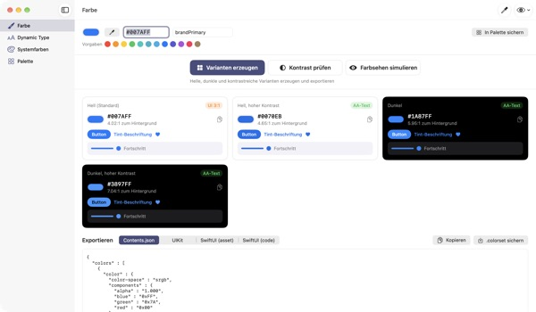
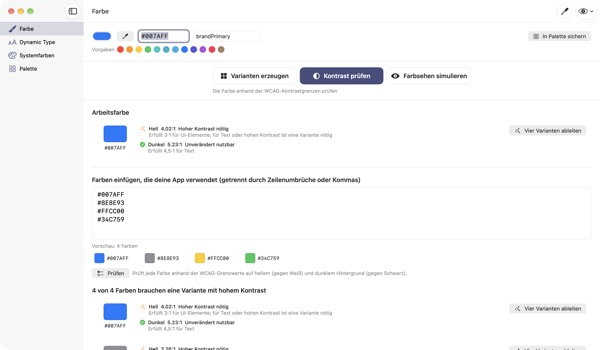
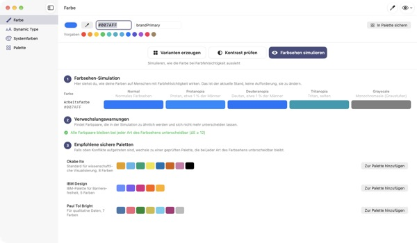
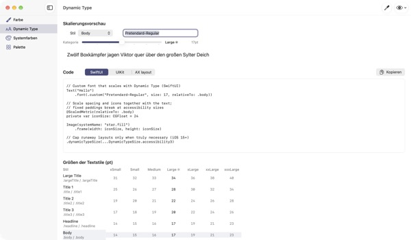

Eine Farbe rein,
vier Darstellungen raus
Systemfarben passen sich von selbst an Dunkelmodus und „Kontrast erhöhen“ an. Deine Markenfarben nicht. TetraTint nimmt eine Farbe aus dem hellen Modus, erzeugt die Varianten Hell, Hell mit hohem Kontrast, Dunkel und Dunkel mit hohem Kontrast und exportiert sie direkt nach Xcode.
Alle Funktionen sind kostenlos. Ab macOS 14.

Probier deine Markenfarbe aus
Füge einen Hex-Wert ein oder tippe auf eine Vorgabe. Mit derselben Berechnung wie in der App siehst du sofort alle vier Varianten und ihren Kontrast.
Ist deine Markenfarbe im Dunkelmodus schon mal untergegangen?
Das Blau aus dem hellen Modus wirkt auf Schwarz trüb, und wer „Kontrast erhöhen“ aktiviert hat, kann den Text kaum lesen. Für jede Darstellung eine Farbe suchen und jeden Kontrast von Hand nachrechnen kostet einen halben Tag. TetraTint leitet die Varianten so ab, wie sich Systemfarben zwischen den Darstellungen verändern, und zeigt sofort, ob jede besteht.
Alle Farben auf einmal prüfen
Füge die komplette Hex-Liste deiner App ein, und jede Farbe wird eingeordnet: unverändert nutzbar, hoher Kontrast nötig oder nur zur Dekoration.
Eine Problemfarbe wird mit einem Klick zu vier Varianten in deiner Palette. So bist du schnell bereit für die Barrierefreiheitsangabe „Ausreichender Kontrast“ im App Store.

Mit den Augen farbenfehlsichtiger Menschen sehen
Sieh deine Palette mit Protanopie, Deuteranopie, Tritanopie und in Graustufen, und erhalte eine Warnung für Paare, die kaum noch zu unterscheiden sind.
Lade die farbenblindsicheren Paletten Okabe–Ito, IBM und Paul Tol mit einem Klick, oder zeig mit dem Augensymbol oben rechts die ganze App so an.

Eigene Schriften folgen der Textgröße
Sieh alle 11 Textstile in 7 Größenstufen und verschiebe einen Regler, um echte Größen zu sehen.
Gib den PostScript-Namen deiner Schrift ein und erhalte Code für UIKit, SwiftUI und @ScaledMetric sowie Code, der bei großer Schrift das Layout umstellt.

In drei Schritten startklar
- 1
Grundfarbe eingeben
Hex einfügen, mit der Pipette irgendwo auf dem Bildschirm aufnehmen oder eine Vorgabe wählen.
- 2
Vier Varianten prüfen
Kontrast an den Abzeichen ablesen und unpassende Varianten mit der Farbauswahl anpassen.
- 3
Nach Xcode exportieren
Als Contents.json, .colorset oder UIKit- und SwiftUI-Code kopieren oder sichern.
So entstehen die Varianten, das bedeuten die Abzeichen
- Hell (Standard)
- Deine Farbe wie eingegeben
- Hell, hoher Kontrast
- Etwas gesättigter, abgedunkelt bis 4.5:1 auf Weiß
- Dunkel
- Etwas heller und kräftiger (Helligkeit +5, Sättigung +3)
- Dunkel, hoher Kontrast
- Aufgehellt bis 7:1 auf Schwarz
- AA-Text
- Mindestens 4.5:1 zum Hintergrund, geeignet für Fließtext
- UI 3:1
- Mindestens 3:1, reicht für Buttons und Symbole, nicht für Text
- Niedrig
- Unter 3:1, nicht für Text, Symbole oder Statusanzeigen
- Export
- Contents.json · .colorset · UIKit · SwiftUI, oder die ganze Palette als ein .xcassets
Die Referenzwerte der Systemfarben stammen aus Apples Human Interface Guidelines und können sich mit OS-Updates ändern. Nutze in deiner fertigen App die APIs für Systemfarben.
Alle Funktionen sind kostenlos
TetraTint
- Vier Varianten erzeugen und exportieren
- Kontrastprüfung für eine Liste von Hex-Werten
- Farbsehen-Simulation und farbenblindsichere Paletten
- Dynamic-Type-Tabelle und Code-Erzeugung
- Systemfarben-Referenz, Palettenexport als .xcassets
Den Entwickler unterstützen (freiwillig)
- Nichts ist gesperrt
- Wenn es dir geholfen hat, kannst du in den Einstellungen ein Trinkgeld geben
Ein Trinkgeld schaltet keine Funktionen frei.
Kein Konto, keine Werbung. Deine Palette bleibt nur auf diesem Mac.
Häufige Fragen
Die erzeugten Varianten passen nicht zu meiner Marke.
Passe jede Variante mit der Farbauswahl auf ihrer Karte an. „Alle neu erzeugen“ verwirft deine Änderungen und leitet alles neu aus der Grundfarbe ab.
Wie werden die Varianten berechnet?
Sie folgen dem, wie sich Apples Systemfarben tatsächlich zwischen den Darstellungen verändern: im Dunkelmodus etwas heller und kräftiger, bei Hell mit hohem Kontrast mindestens 4.5:1 auf Weiß, bei Dunkel mit hohem Kontrast mindestens 7:1 auf Schwarz.
Was bedeutet eine Warnung bei der Farbsehen-Simulation?
Unter dieser Simulation fällt der Unterschied zweier Farben unter ΔE 12, sie sind kaum zu unterscheiden. Verlass dich nicht nur auf Farbe: ergänze Symbole, Muster oder Beschriftungen, oder wechsle zu einer sicheren Palette.
Wie bringe ich einer eigenen Schrift Dynamic Type bei?
Gib unter Dynamic Type den PostScript-Namen der Schrift ein und wähle einen Stil, dann erhältst du Code für UIKit, SwiftUI und @ScaledMetric. In den Bedienungshilfen-Größen wird Body mehr als dreimal so groß, vermeide also feste Höhen und lineLimit(1).
Exportierte Farben sehen anders aus als die Systemfarben in meiner App.
Die Referenzwerte stammen aus den Human Interface Guidelines und können sich zwischen OS-Versionen ändern. Verwende für Systemfarben immer die APIs UIColor oder Color.
Wo wird meine Palette gespeichert?
Nur auf deinem Mac. Nichts wird mit der Cloud synchronisiert oder irgendwohin gesendet. Mehr dazu in der Datenschutzerklärung.
Wird eine mit der Pipette aufgenommene Farbe gespeichert?
Nein. Es wird nur der Farbwert an der gewählten Stelle gelesen und als Arbeitsfarbe verwendet. Kein Bildschirmbild wird gespeichert oder gesendet.
Auf welchen Macs läuft die App?
Ab macOS 14 (Sonoma). Beim Export wählst du selbst, wo die Dateien gesichert werden.
Fehler, Ideen oder Fragen? Schreib an leeo@kakao.com. Meist kommt die Antwort innerhalb von 2–3 Tagen.